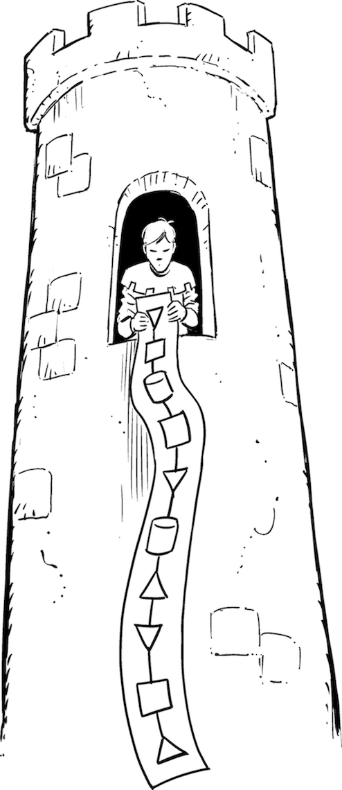

The Upper and Lower Floors of the Ivory Tower

When I was hired as an enterprise architect, the head of enterprise architecture to be more precise, I had little idea what enterprise architecture really entailed. I also wondered whether my team should be called the “Feet of Enterprise Architecture,” but that contemplation didn’t find much love. The driver behind the tendency to prefix titles with “head of” was aptly described in an online forum I stumbled upon:1
This title typically implies that the candidate wanted a director/VP/executive title but the organization refused to extend the title. By using this obfuscation, the candidate appears senior to external parties but without offending internal constituencies.
I am not particularly fond of the “head of xyz” title because it focuses on the person heading (no pun intended) a team rather than accomplishing a specific function. I’d rather name the person by what they need to achieve, assuming that they don’t do this alone but have a team supporting them.
All title prefixes aside, when IT folks meet an enterprise architect, their initial reaction is to place this person high up into the penthouse (Chapter 1), where they draw pretty pictures that bear little resemblance to reality. To receive a warmer welcome from IT staff, one should therefore be careful with the label enterprise architect. However, what is an architect who works at enterprise scale supposed to be called, then?
The recurring challenge with the title enterprise architect tends to be that it could describe a person who architects the enterprise as a whole (including the business strategy level) or someone doing IT architecture at the enterprise level (as opposed to a departmental architect, for example).
To help resolve this ambiguity, let’s defer to the defining book on the topic, Enterprise Architecture as Strategy by Jeanne Ross, Peter Weill, and David Robertson.2 Here, we learn the following:
Enterprise architecture is the organizing logic for business processes and IT infrastructure reflecting the integration and standardization requirements of the company’s operating model.
Following this definition, enterprise architecture (EA) isn’t a pure IT function but also considers business processes, which are part of a company’s operating model. In fact, the book’s most widely publicized diagram shows four quadrants depicting business operating models with higher or lower levels of process standardization (uniformity across lines of business) and process integration (sharing of data and interconnection of processes). Giving industry examples for all quadrants, Weill and Robertson map each model to a suitable high-level IT architecture strategy. For example, a data and process integration program might yield little value if the business operating model is one of highly diversified business units with few shared customers. For such enterprises, IT should instead provide a common infrastructure, on top of which each division can implement its diverse processes. Conversely, a business that’s composed of largely identical units, such as a franchise, benefits from a highly standardized application landscape. The matrix demonstrates perfectly how EA forges the connection between the business and IT. Only if the two are well aligned does IT provide value to the business.
Connecting business and IT is easier if the business side of the organization also has a well-defined architecture. Luckily, as business environments become more complex and digital disruptors force traditional enterprises to evolve their business models more rapidly, the notion of business architecture has gained significant attention in recent years. Business architecture translates the structured, architectural way of thinking (Chapter 8) that’s guided by a formalized view of components and interrelationships into the business domain. Rather than connecting technical system components and reasoning about technical system properties such as security and scalability, business architecture describes the “the structure of the enterprise in terms of its governance structure, business processes and business information.”3
The business architecture essentially defines the company operating model, including how business areas are structured and integrated, derived from the business strategy. Meanwhile, the IT architecture builds the corresponding IT capabilities. If the two work seamlessly side by side, you don’t need much else. In the more likely case that the two aren’t well connected, you need something to pull them together. Therefore, here’s my proposed definition of enterprise architecture:
Enterprise architecture is the glue between business and IT architecture.
This definition clarifies that EA, unlike IT architecture at enterprise level, isn’t an IT function. Accordingly, the EA team should be positioned close to the company leadership and not be buried deep within the IT organization, so that it can balance business, technical, and organizational considerations.
The definition also implies that after business and IT are tightly interlinked, you won’t need much EA, which is one reason why you don’t find much EA within so-called digital giants.
Most digital giants don’t have EA departments because their business and IT are tightly interlinked.
Alas, don’t panic! The translation between business needs and IT architecture remains a domain that’s perennially short of talent. It appears that most folks find comfort on one or the other side of the fence, but only a few can, and choose to, credibly play in both worlds. It’s a good time to be an enterprise architect.
The strict separation between IT and business that is commonly found in enterprises seems troublesome to me. I tend to jest that in the old days, when everything was running on paper instead of computers, companies also didn’t have a separate “paper” department and a CPO—the chief paper officer. In digital companies business and IT are inseparable; IT is the business, and the business is IT.
Connecting business and IT gives EA a whole new relevance but also new challenges. It’s like adding a mid-floor elevator that connects the business folks in the penthouse with the IT folks in the engine room because the respective elevators don’t quite reach each other. Although highly valuable, in the long run such an enterprise architecture department’s objective must be to make itself obsolete, or at least smaller, by extending the respective elevators. But no worries, rapid changes in both the business and technical environments make it unlikely that the need for enterprise architecture disappears altogether.
Building a fruitful, bidirectional connection between business and IT architecture becomes easier if the business architecture is at a comparable level of maturity as IT architecture. More often than not, though, business architecture is even less mature as a domain than IT architecture. That’s not because businesses had no architecture; rather, it’s because the folks doing business architecture were not identified as such but were the business leaders, division heads, or COOs. Also, designing the business was rather attributed to business acumen than structured thinking. Where the business produced architecture-like artifacts, they often ended up being “functional capability maps” that don’t include any lines (Chapter 23).
Supporting the business is the ultimate goal and raison d’être of all enterprise functions. Positioning IT architecture on par with business architecture highlights, though, that the days when IT was a simple order-taker that provides a commodity resource at the lowest possible cost are (luckily) over. In the digital age, IT is a competitive differentiator and opportunity driver, not a commodity like electricity.
Digital giants like Google or Amazon aren’t technology companies; they are advertising or fulfillment companies that understand how to use technology for competitive advantage.
Therefore, the common excuse that “Google and Amazon are technology companies while we are an insurance company/bank/manufacturing business” no longer holds. These companies will compete with you, and if you want to be competitive, you also need to change your view of IT. It’s not an easy thing to do, but the digital giants have demonstrated how powerful that insight is.
The scale and complexity of doing architecture at enterprise scale makes large-scale IT architecture exciting, but it also presents one of the biggest dangers. It’s far too easy to become lost in this complexity and have an interesting time exploring it without ever producing tangible results. Such instances are the source of the stereotype that EA resides in the ivory tower and delivers little value. EA teams therefore need to have a clearly articulated path to value: any effort that is made needs to be paid back by providing value to the organization.
Another danger lies in the long feedback cycles. Judging whether someone performs good EA takes even longer than judging good application architecture. Even though the digital world forces shorter cycles, many EA plans still span three to five years. Thus, enterprise architecture can become a hiding ground for wanna-be cartographers. That’s why enterprise architects need to show impact (Chapter 5).
Some enterprise architects associate themselves closely with a specific EA tool that captures the diverse aspects of the enterprise landscape. These tools allow structured mapping from business processes and capabilities, ideally produced by the business architects, to IT assets such as applications and servers.
Make sure that your tools work for you, not the other way around!
Done well, such tools can be the structured repository that builds the bridge between business and IT architecture. Done poorly, they become a never-ending discovery and documentation process that produces a deliverable that’s missing an emphasis (Chapter 21) and is outdated by the time it’s published. Needless to say, such a deliverable provides little value.
My definition of EA also implies that some IT architects, who aren’t enterprise architects, work at enterprise scope. These are largely the folks I refer to in this book. Because they are the technical folks who have learned to ride the elevator (Chapter 1) to the upper floors to engage with management and business architects, they are a critical element in any IT transformation.
How is being an “enterprise-scale architect” different from a “normal” IT architect? First, everything is bigger. Many large enterprises are conglomerates of different business units and divisions, each of which can be a multibillion-dollar business and can be engaged in a different business model. As things get bigger, you will also find more legacy: businesses grow over time or through acquisitions, both of which breed legacy. This legacy isn’t constrained to systems, but also to people’s mindsets and ways of working. Enterprise-scale architects must therefore be able to navigate organizations (Chapter 34) and complex political situations.
Performing true EA is as complex and as valuable as fixing a Java concurrency bug. There’s enormous complexity at all levels, but the good news is that you can use similar patterns of thinking at the different levels. For example, software architects need to balance their system’s granularity and interdependencies: a giant monolith is rather inflexible, whereas a thousand tiny services will be difficult to manage and can incur significant communication overhead. The exact same considerations apply to business architecture when considering the size of divisions and product lines. Lastly, EA also faces the same trade-offs when having to decide which systems should be centralized, which simplifies governance but can also stifle local flexibility. Architecture, if taken seriously, provides significant value at all levels.
Enterprises resemble a fractal structure: the more you zoom in or out, the more things look similar. The short film Powers of 10, produced in 1977 by Charles and Ray Eames for IBM, illustrates this beautifully: the film zooms out from a picnic in Chicago by one order of magnitude every 10 seconds until it reaches , showing a sea of galaxies. Subsequently, it zooms in until at it shows the realm of quarks. Interestingly, the two views don’t look all that different.
1 Keith Rabois, Quora, May 11, 2010, “What does “Head” usually mean in job titles like “Head of Social,” “Head of Product,” “Head of Sales,” etc.?”, https://oreil.ly/5LmbY.
2 Jeanne W. Ross, Peter Weill, and David C. Robertson, Enterprise Architecture as Strategy: Creating a Foundation for Business Execution (Boston, MA: Harvard Business Review Press, 2006).
3 Object Management Group website, http://www.omg.org/bawg.